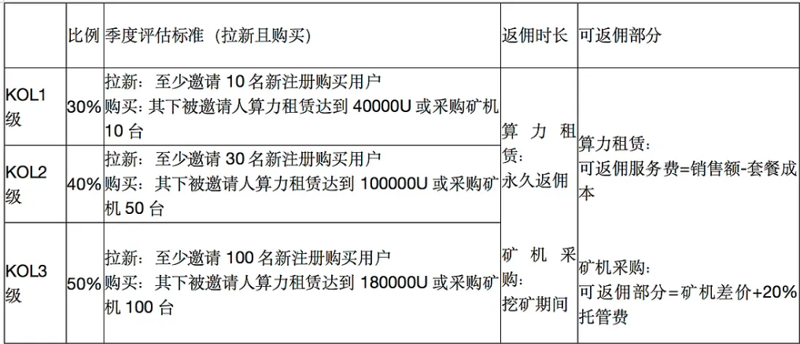
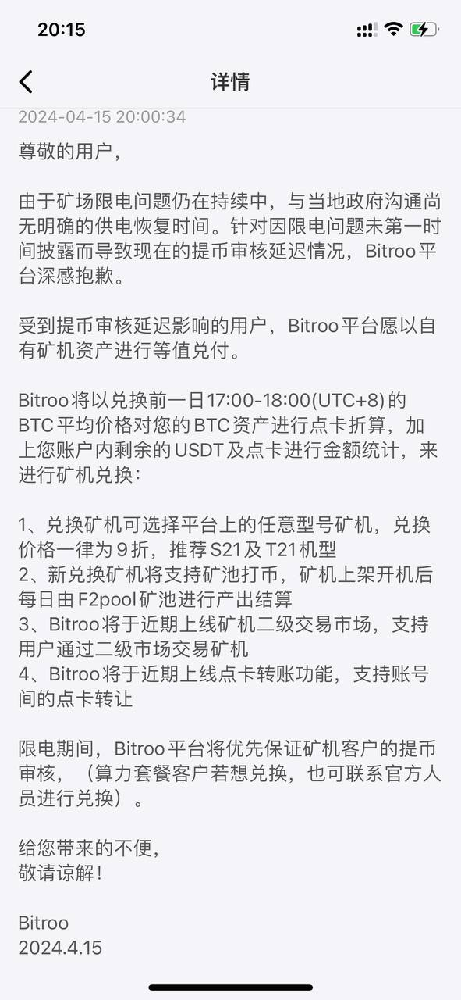
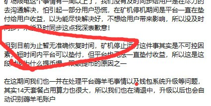
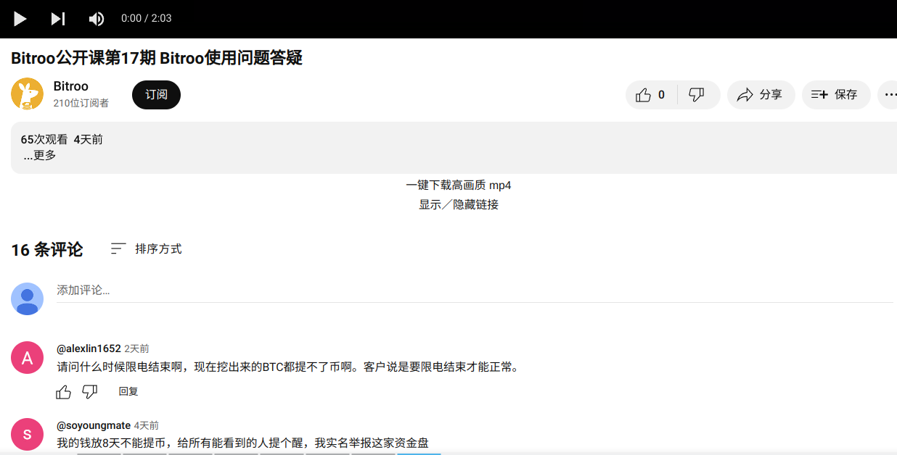
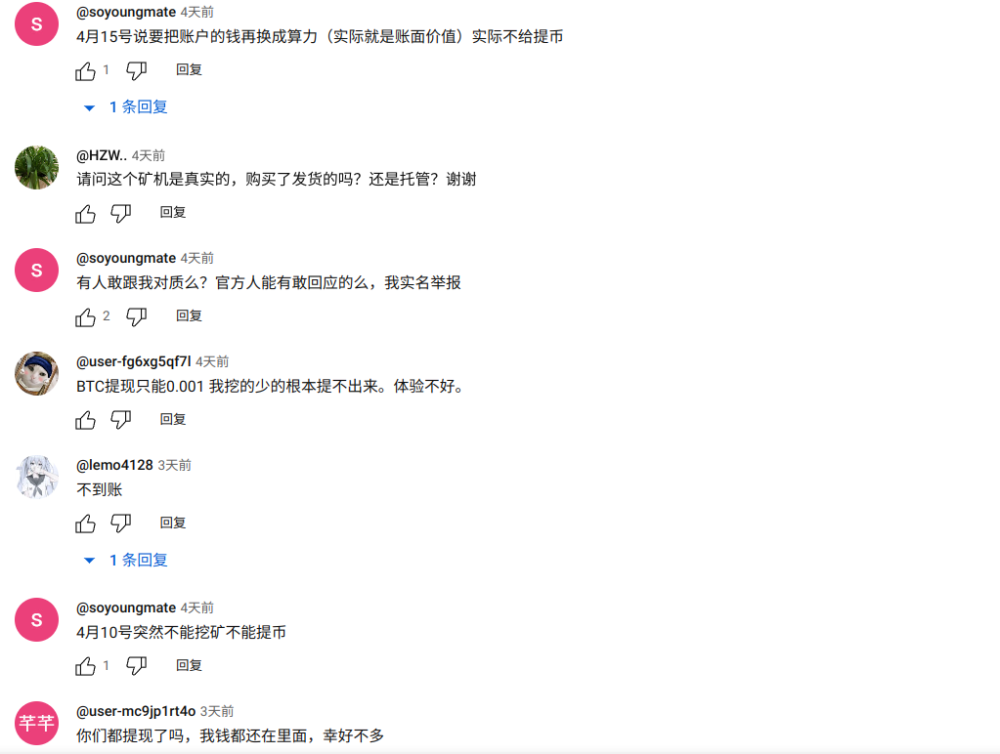

Bitroo是什么?
Bitroo也叫比特袋鼠，成立于2023年，是一家提供云算力挖比特币的平台，用户可以通过购买算力套餐或购买矿机托管挖矿获得比特币收益。
Bitroo撸新人奖励
Bitroo注册就送1T免费算力挖矿30天的奖励，实测发现这1T算力挖30天可以获得0.0000500左右的比特币，而它家提币需要消耗0.0002比特币的手续费，因此不充钱是无法白嫖这30天的挖矿奖励的。
Bitroo靠谱吗？
Bitroo是2023年成立的公司，成立时间很短，而且是华人的公司，因此跑路风险相对较大。虽然在Youtube上也有很多视频博主推广它家，但很多其实是冲着它家给的高佣金才进行推荐的。
在google上搜索“袋鼠荣耀合伙人”就可以找到相关内容，推广它家的产品能获得高达30%~50%的佣金。因此很多油管的博主都很乐意推广它家的产品，当然投资的钱都是自己出的，如果公司跑路自己血本无归也不能怪油管的视频博主。因为他们的视频只是提供参靠，不提供投资建议,他们都有一些类似以下的免责声明。
本视频内容仅供参考，不应视为 (i) 投资建议或推荐；(ii) 购买、出售或持有数字资产的要约或邀请；或 (iii) 财务、会计、法律或税务建议。 包括稳定币和 NFT 在内的数字资产受市场波动影响，风险较高，您甚至可能会损失全部资产价值。 您应根据自身财务状况和风险承受能力，慎重考虑是否适合交易或持有数字资产。
Bitroo跑路了吗？
截至到目前(2024-4-23)还没有跑路，值得注意的是很多人的算力套餐自2024-4-9后已经被停了快半个月了，官方发布的公告是矿场限电。
算力套餐停了也就没有收益了，只能等到矿场供电了才能恢复。
Bitroo无法提币
部分用户反应限电后，算力套餐暂停，连挖到的比特币也提不出来，官方的公告居然称是平台在垫付收益。这就有点离谱了，用户提的币是自己已经挖到的币，已经挖到的币就不存在什么垫付不垫付的了。
 油管上官方的视频(https://www.youtube.com/watch?v=vSvryFE3PFs)下面，也有人发评论说无法提币，不过不知道官方是没看到评论还是在装死状态没有回复。
Bitroo是资金盘吗？
有可能，矿场停电可能只是一个借口，因为停电后就可以停用户的算力套餐，用户那里就不会每日产出收益，也就不需要资金应对用户的提币操作了。截至目前(2024-04-23)官方也没有给出具体恢复供电的日期。
Telegram官方交流群里也有用户在问矿场的具体位置，客服不知道是真没看见还是装作没看见没有进行回答。
Bitroo是骗局吗？
可疑点一:提币地址不支持隔离见证地址(bc1q开头的地址)
隔离见证（SegWit）是2015年开发的升级协议。引入该概念是为了解决区块链网络当下面临的可扩展性问题。隔离见证由比特币开发者Pieter Wuille和其他比特币核心贡献者于2015年开发升级。2017年8月，隔离见证升级被作为比特币网络上的软分叉进行实施。相对 P2SH 地址，Segwit 地址可以节省大约 16% 的交易费用，相对传统地址，节省 38% 以上的费用。由于这种成本节约，它是最常用的比特币交易地址。作为2023年成立的公司，居然不支持隔离见证地址提币，属实令人匪夷所思，该不会是用的几年前的老项目换个壳搞的吧?
可疑点二:矿场限电限制用户提币
已经挖到的币为啥不让提呢？矿场限电跟我提自己已经挖到的币有啥关系吗？该不会盘子是资金链断裂了吧？
可疑点三:矿场限电后疯狂推广矿机套餐
搞半天说的矿场限电，限制的是短期的算力套餐，买矿机的挖矿一点影响都没有。有点诱导用户花大价钱购买矿机的嫌疑。最怕的就是花了大价钱买它家矿机，它刚好钱卷够了跑路了！
总结
现在再入场Bitroo挖矿，很大可能是韭菜了，说不定今天入场明天就跑路了！
千万不要被油管上的博主视频给忽悠了，Bitroo跑路对于推广它的博主来说只不过没有佣金拿了，自身也没啥损失，但对于投资者来说损失的是真金白银了！